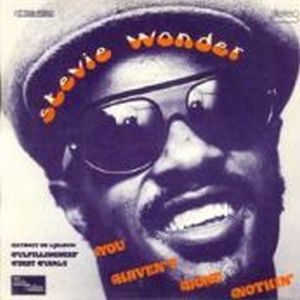

Fulfillingness' First Finale is the first album made after the accident that left him remained in a coma, and returns with a strong religious and spiritual touch is reflected in "They Don't Go When I Go" or "Heaven Is Ten Million Light Years Away", songs full of experiences and reaching close to their gospel of childhood years in the parish.
Yet, it retains vitality in songs like "Boogie On Reggae Woman" statement about their likes about sex and "You Haven't Don't
Nothing", which helps with with fine irony and acidity to bashing the time of Nixon. The guests on this album are sparse, but excellent, just simply do vocals, like the Jackson Five in "You haven't don't nothing", Deniece Williams in "Smile Please", Paul Anka, or Minnie Riperton. The album was published on the market on July 22, 1974, and had a great acceptance even before leaving the sale, the accident had to be helped in a state of continued success, in addition to the Grammys harvested the previous year.
The Grammys were one more time to him. He got four Grammys, including Best R&B vocal performance male for "Boogie On Reggae Woman", and best album, turning it back into a milestone, or the previous year was the first black person to receive this award, this was his second year. An honor to add to his resume. The fact that Wonder a break of two years was taken to record their next album -Songs in the Key of Life- interrupted his amazing waterfall hoarded Grammys, causing the famous words of Paul Simon publicly thanking Wonder not having published a album in 1975 (when he received the Grammy for best album of the year for "Still Crazy After All These Years".

